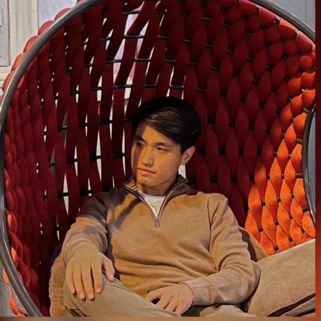

 Стамбул - это один из крупнейших торговых центров не только Турции, но и всей Европы. Здесь можно купить все, что угодно, начиная от автозапчастей и заканчивая роскошными ювелирными изделиями. В городе есть множество рынков, торговых центров, магазинов и бутиков, где можно купить качественные товары по разумным ценам. Один из самых известных рынков в Стамбуле - это Базар Капалычарши. Этот огромный рынок является одним из самых старых и крупнейших в мире. Здесь можно купить практически все - от драгоценных камней и шелковых тканей до местных деликатесов и сувениров. Кроме Базара Капалычарши, в Стамбуле есть множество других рынков, на которых можно купить все, что угодно. Например, на рынке Мисир Чарши можно купить специи и приправы, на рынке Фатих можно найти различные товары из кожи, а на рынке Арasta можно купить ковры и текстильные изделия. Если вы ищете более современные торговые центры, то в Стамбуле вы найдете множество таких мест. Например, в Торговом центре Истанбул можно купить все, начиная от одежды и обуви до бытовой техники и электроники. Также в Стамбуле много бутиков мировых брендов, где можно купить роскошные товары высокого качества. Когда дело касается продажи товаров в Стамбуле, то здесь также много возможностей. Если у вас есть свой бизнес, то вы можете арендовать торговое помещение на рынке или в торговом центре. Также в Стамбуле есть много интернет-магазинов, где вы можете продавать свои товары онлайн. В целом, Стамбул является одним из лучших мест в мире для покупки и продажи товаров. Здесь можно найти все, что угодно, начиная от дешевых товаров до роскошных изделий высокого качества.